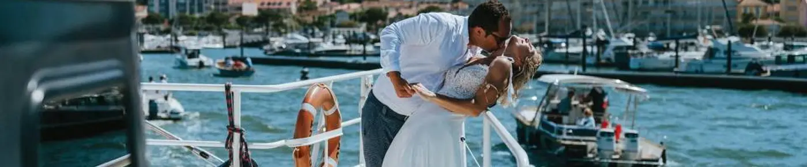

Do you love feeling the fresh sea spray and hearing the sound of the waves, and want to enjoy them at your wedding? No problem: fall for unusual seaside wedding venues in the Gironde!
The Gironde, a place to get married?
Beach weddings are on the rise, and many couples choose to say "I do" with their feet in the water. It is the summery, wonderfully romantic atmosphere that wins more and more people over. Opening straight onto the Atlantic, the Gironde is an ideal region, full of dream venues for the occasion. You can choose the Arcachon Bay or beaches such as Lacanau, more like the beaches of the Landes: the choice is yours!

There are several ways to get married by the sea. For example, you can hold your symbolic ceremony on the beach. With an arch facing the water, your guests will have a breathtaking view of you both speaking your vows in front of the sea, and you'll get stunning photos to capture this very special day. Don't forget to take care over your decor and make sure it matches your beach theme, with natural elements such as shells, white flowers, rope and so on.
I have been based in the Bordeaux region for several years and, as a wedding planner, I have organised many waterside weddings in the area. But as well as organising weddings and handling wedding day coordination, I am also a wedding decorator. This means that, if you wish, I can take charge of your wedding decor and offer you a bespoke package on a beach theme, for example!
So if you need decor ideas or would like support with planning your wedding, don't hesitate to get in touch.

A sea breeze for your wedding
After months of health restrictions, everyone now wants to get out and see new horizons. And what could be better than getting married in the sea air on a warm sandy beach? Whether for your symbolic ceremony or the whole day, every option is possible. The Bordeaux region is full of incredible places to exchange your vows. From Cap Ferret to the Arcachon Bay, you are bound to find your ideal beach in the Gironde.
A wedding on the beaches near Bordeaux
How can you organise a feet-in-the-water wedding near Bordeaux this summer? Exchange rings with your toes in the sand? It's entirely possible. Often seen as out of reach because of their luxury image, beach weddings are now a dream for many. They take place in extremely romantic settings that have drawn a great many people in recent years, from Pascal Obispo to Ingrid Chauvin. One of the legendary spots on Cap Ferret is the Bartherotte cabin, which has attracted many celebrities.

Need help finding unusual venues?
As a wedding planner and wedding designer, I can fully help you organise your feet-in-the-water wedding and create the ideal decor for this special day. Whether your wedding has a boho or romantic theme, it can blend perfectly into this relaxing, magical waterside world. Villa La Tosca will be delighted to welcome you.
From the decor of your symbolic ceremony site to your reception venue, there are many ways to turn your wedding into an ideal day. From the clichés of American romantic comedies to your own simplicity, every idea works for saying yes to the sound of the waves aboard the boat "Le Côte d'Argent". Panicking at the thought of organising such a beautiful event? Don't hesitate to email me; I'll be delighted to answer your questions!
Lovely Day Event offers several services
Wedding planning
I step in at every stage of your preparations and guide you through your choices, bringing ideas and suggestions so that your wedding looks like no one but you.
Wedding design
Creative and passionate, I am a certified Wedding Designer and I create a scenographic atmosphere that matches the theme of your wedding.
On-the-day coordination
I will be the conductor of your day, managing the suppliers, the set-up of your decor and the smooth running of this beautiful day.